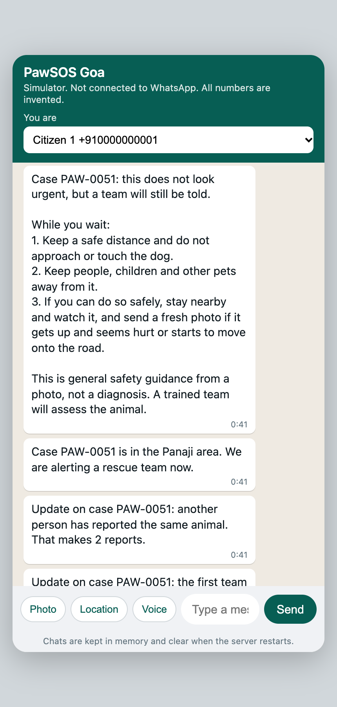
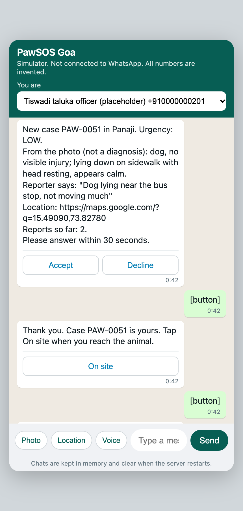
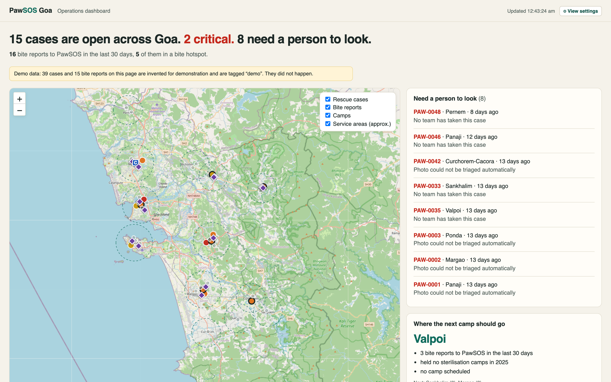
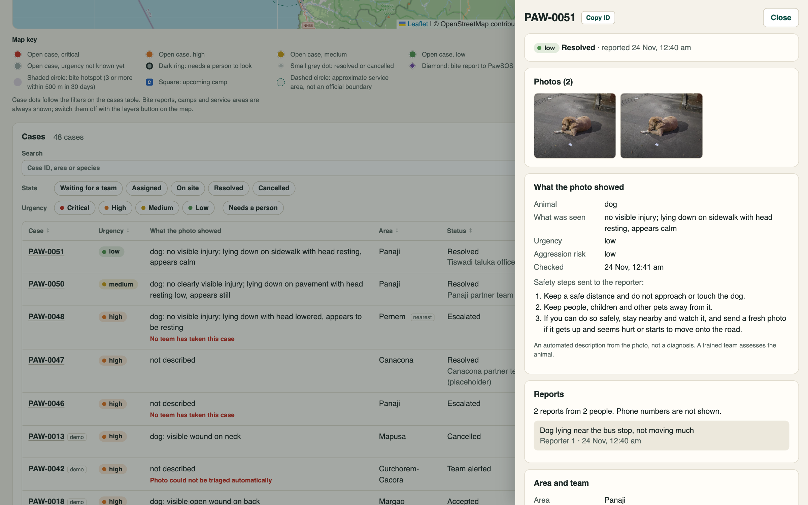
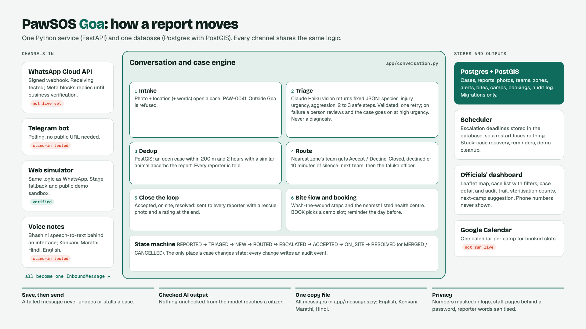

Goa AI Hackathon 2026 · Track 3 · AI-Powered Emergency Management for Animal Welfare
One WhatsApp number for every animal emergency in Goa.
dog bite cases in Goa in 2025. About one every 27 minutes.

Citizen's chat

Escalated alert

Map of cases, bite reports and camps; filters; sterilisation counts per municipality; a suggestion for the next camp. Demo data is tagged "demo".


| Report, dedup, routing, escalation, close the loop, bite flow, BOOK, dashboard | verified automated tests and end-to-end runs on the simulator |
| Claude photo triage | run live on a real street-dog photo, 24 Nov. The same photo was rated "needs attention soon" once and "not urgent" once: urgency is guidance, and a trained team decides |
| WhatsApp Cloud API | partly receiving works; Meta blocks replies until the business is verified |
| Telegram, Bhashini voice, Google Calendar | stand-ins only built and tested against mocks, not yet run live |
| Konkani, Marathi, Hindi replies | drafted machine-drafted; not yet checked by a fluent reader |
| Partner teams, zone boundaries, health centres | placeholders invented teams; approximate circles; centre list unconfirmed |
Try the live demo at goa.ayushchougula.in